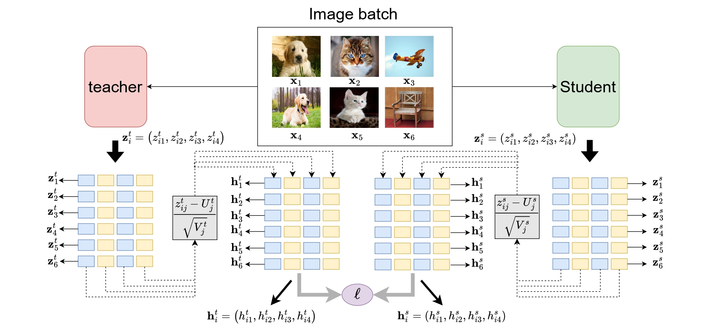
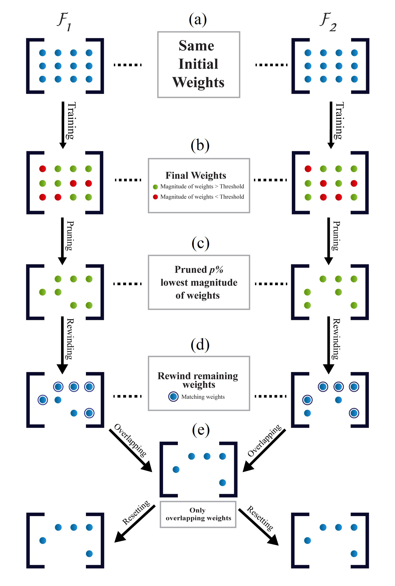
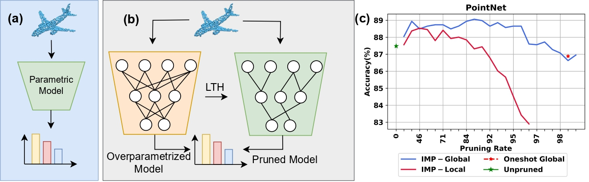
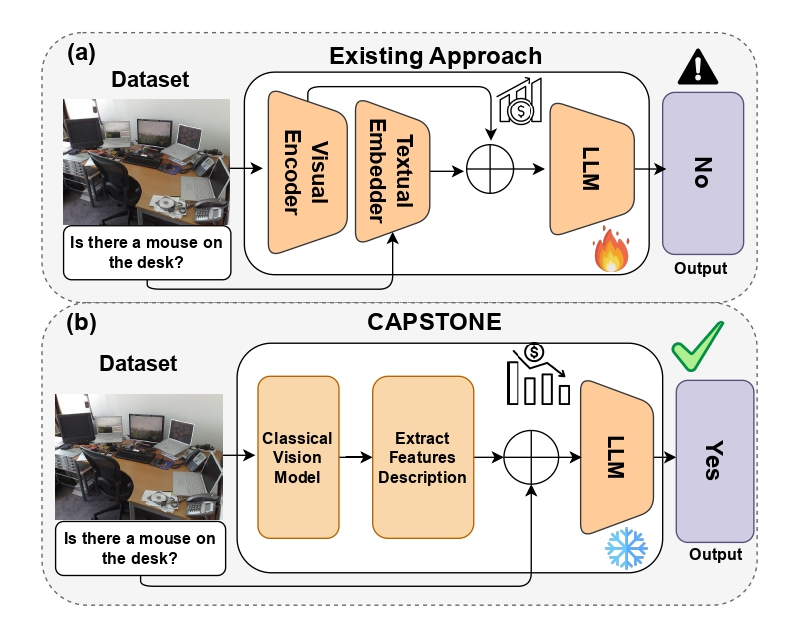
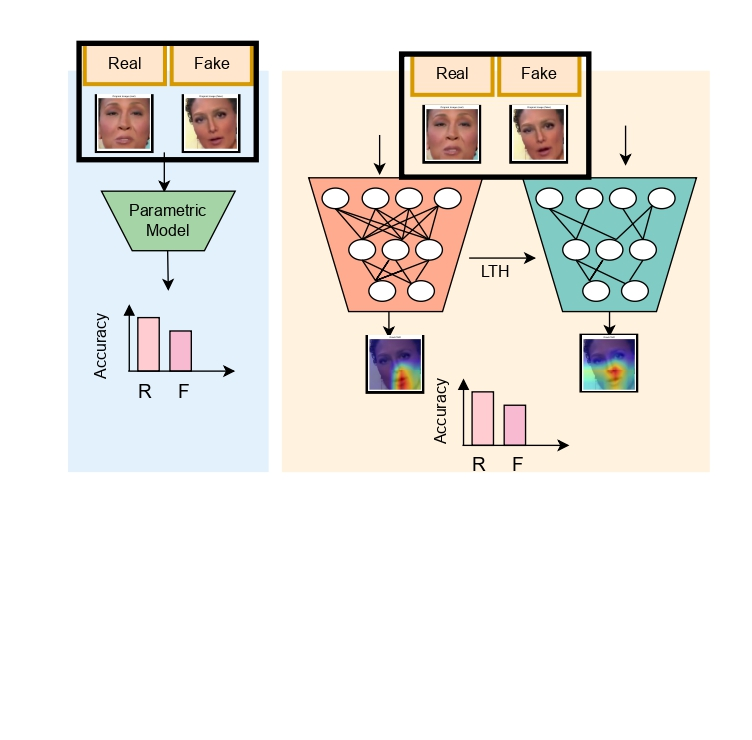
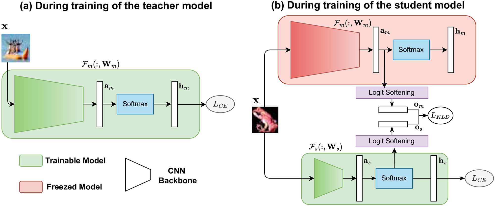

I am a researcher at the Machine Intelligence Lab, North South University, Bangladesh. I work on efficient post-training of language models, mainly knowledge distillation, on-policy self-distillation and sparsity. I am interested in where the learning signal actually matters during adaptation, so that models can be improved with less data, annotation and compute.
Previously, I was a Research Associate at the Apurba-NSU R&D Lab, working with Dr. Nabeel Mohammed and Dr. Shafin Rahman, and a Fatima Fellow (Hugging Face & Google Colab) mentored by Dr. Isidora Tourni. I received my B.Sc. in Computer Science and Engineering from North South University in 2021.
I am open to PhD positions and research collaborations.
* equal contribution. Full list on Google Scholar.






Reviewer: NeurIPS 2026, CVPR 2026, ICLR 2026 2027, TMLR, NeurIPS 2025, ICML 2025 workshop (LXAI), NeurIPS 2024 workshop (ML & Compression).
Talks: LumiNet, Cohere For AI (2024); Efficiency in deep learning, NSU ACM Student Chapter (2022); ASR and OCR, Microsoft Learn Student Ambassadors (2022).
Mentoring: I have mentored undergraduate researchers at the Apurba-NSU R&D Lab, and I am happy to talk with first-generation students starting in research.